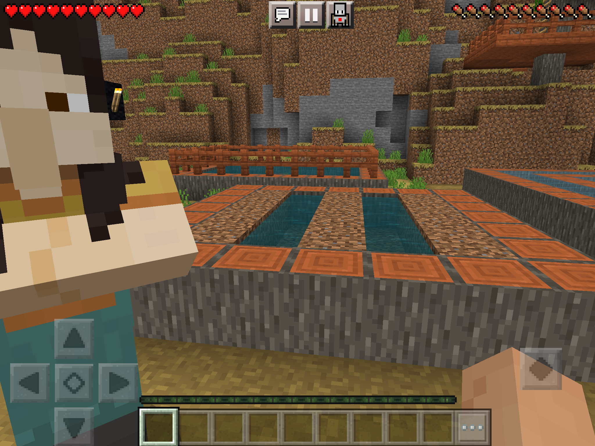
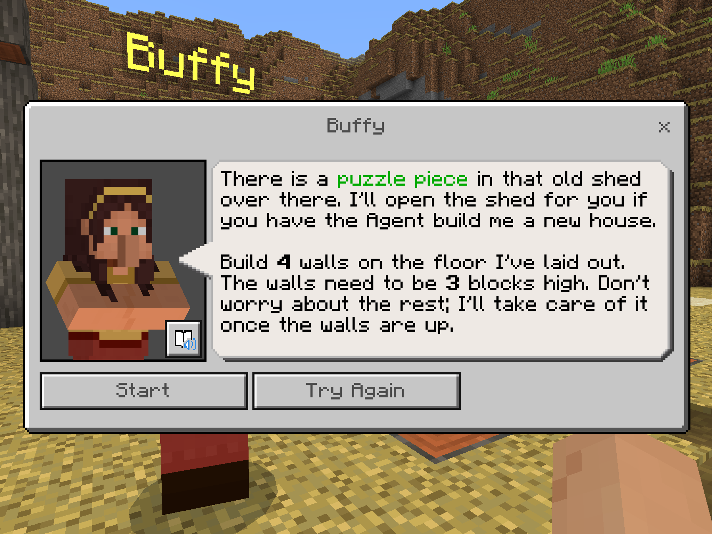
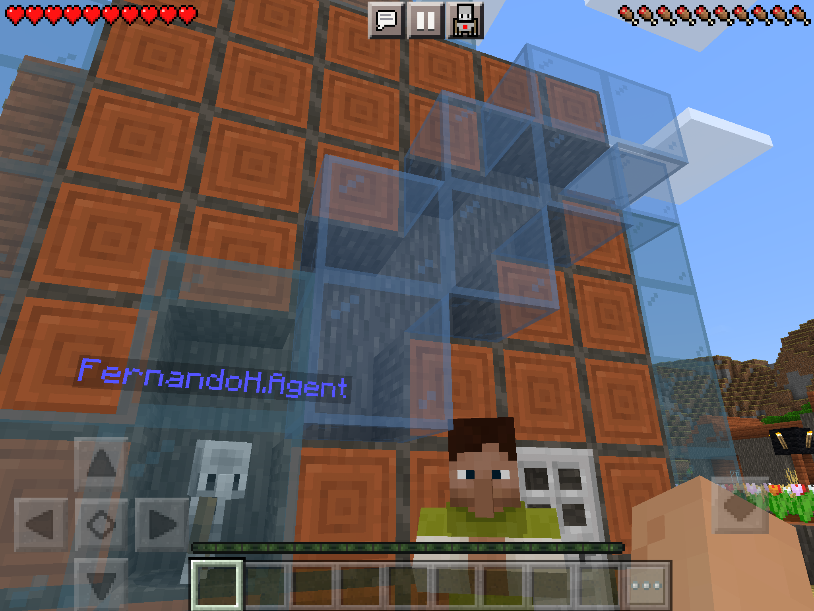

Entrando na atividade de programação
Para entrar na atividade de programação, você deve primeiro se logar no minecraft education.
Depois vá clicando nos seguintes menus:
- Jogar;
- Ver biblioteca;
- Kit de disciplinas;
- Ciência da computação;
- Hora do código;
- Cidade de programação;
- Criar mundo;
Assim que o jogo carregar, terá um personagem logo na sua frente. Se movimente para frente, clique nele e clique em "Falar"
Ele te dará várias opções e você pode escolher qualquer uma. Escolha a palavra em inglês que você preferir.
Depois, você será transportado para outro mapa. Neste mapa, logo na sua frente terá um painel.
O objetivo do jogo é colecionar cada um dos pedaços desse painel e montar o quebra-cabeça nesse espaço.
Para conseguir os pedaços desse painel, você precisa conversar com os outros personagens espalhados ao redor dessa cidade.
Cada um desses personagens te dará um pequeno desafio que você deve completar programando o seu Agente.
Para começar o desafio, clique em "start".
Para programar seu Agente, clique no botão de um robozinho no alto da tela.
Como os textos explicando os desafios estão todos em inglês, coloquei uma explicação de cada um deles logo abaixo.
A lista de personagens está em ordem alfabética dos seus nomes.
É uma boa, se você tentar ler e entender os desafios em inglês mesmo. Mas se tiver dificuldades, este guia pode te ajudar.
Se, por qualquer motivo, o desafio parecer completado e o personagem não abrir a porta para você pegar o pedaço do painel, pode ser que o desafio tenha tido algum bug.
Para resolver isto, fale de novo com o personagem e clique em "try again" e depois em "start". Isso vai reiniciar o desafio todo, mas deve funcionar para arrumar o bug.
Depois de resolver todos os desafios, basta colocar todas as peças no painel formando uma imagem e vá mostrar para o professor!
Os puzzles de cada personagem
Para ajudar Anne, você deve programar o seu robô para plantar nesse terreno que está perto da personagem.
Lembre-se que no minecraft, você precisa preparar o terreno antes de plantar alguma coisa.
Para ajudar Babs, você deve programar o seu robô para coletar todos os vidros que estão espalhados dentro dessa casa perto da personagem.
Lembre-se se usar o bloco de coletar (collect all), se o seu robô passar sobre um vidro, o vidro vai sumir, mas não vai contar como coletado e pode buggar o desafio.


Para ajudar Buffy, você deve programar o seu robô para construir as paredes nesse quadrado no chão logo ao lado da personagem.
As paredes precisam ter 3 blocos de altura.
Para ajudar Buford, você deve programar o seu robô andar por este labirinto em espiral que está no chão até o piso amarelo.

Para ajudar Chaz, você deve programar o seu robô para subir até o teto nesse espaço que ele vai aparecer ao lado do personagem.
Para este desafio, depois de iniciá-lo, você precisa olhar para baixo para dentro da casa que você está em cima.
Para ajudar Howard, você deve programar o seu robô para colocar tochas de redstone nesses quadrados amarelos.
Tem um bloco de programação responsável por colocar essa tocha. Dica: sempre teste o uso desses blocos antes de começar a programar para entender o que o personagem vai fazer.

Para ajudar Leo, você deve programar o seu robô para andar por este caminho por baixo da casa até o piso amarelo dentro da casa.
Seu Agente pode flutuar à vontade nesse mundo de minecraft, basta usar o bloco de mover para cima.
Para ajudar Muffy, você deve programar o seu robô para andar até o piso amarelo dentro dessa casa ao lado da personagem.

Para ajudar Stew, você deve programar o seu robô tirar uma camada de blocos de areia nesse terreno logo ao lado da casa desse personagem.